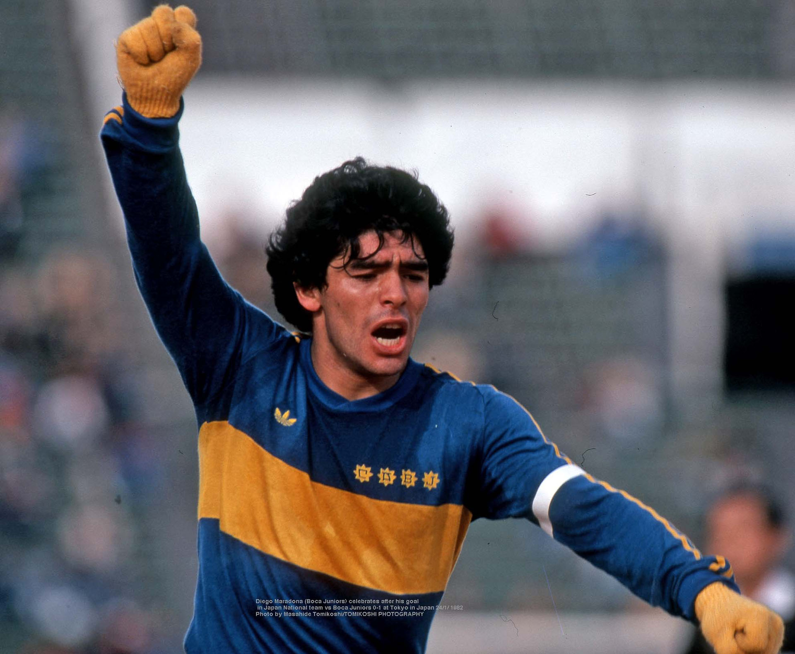
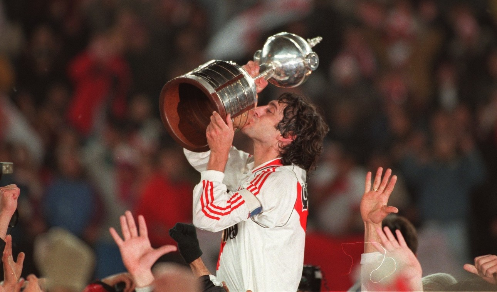
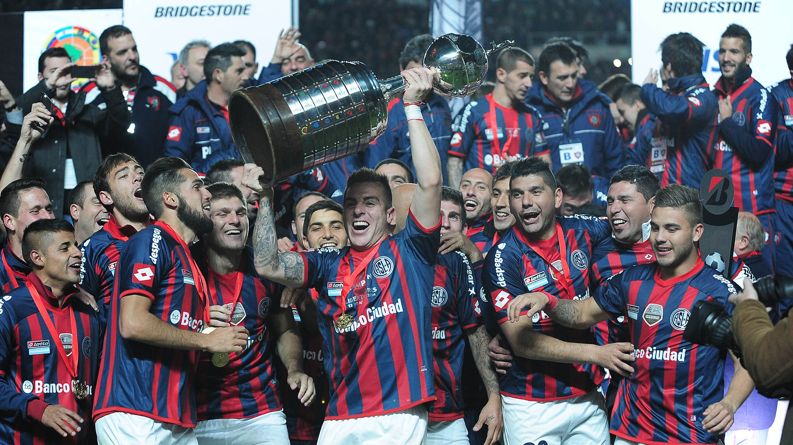
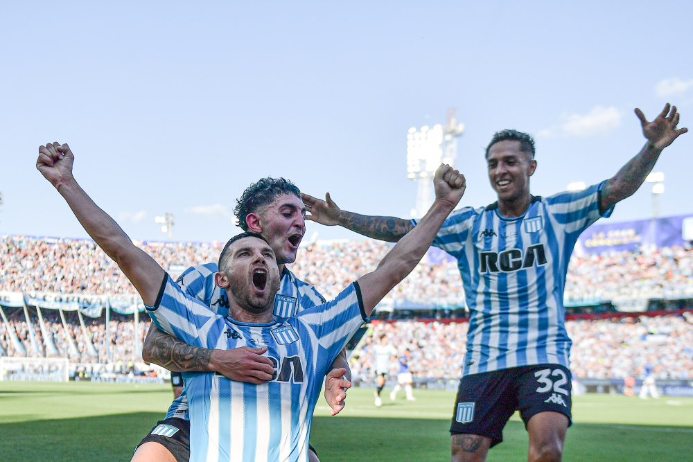

Camiseta Boca Juniors 1982
Camiseta usada por Diego Maradona en el amistoso entre Boca Juniors y la
Selección de Japón, disputado en enero de 1982.
Diego llevó la camiseta de Boca hasta Asia en un cruce tan inusual como fascinante. Sin títulos
en juego, pero con la magia del 10 sobre el césped, esta prenda representa uno de esos momentos
inesperados donde el fútbol y la historia se cruzan lejos de casa.

Camiseta River Plate 1996
Con la tradicional banda roja cruzando el pecho y detalles sobrios en negro,
esta camiseta quedó en la historia grande del club. Fue la que River usó en la final de la Copa
Libertadores 1996, cuando venció a América de Cali en el Monumental y levantó su segunda
Libertadores
Camiseta suplente Independiente 2017
Camiseta usada por Independiente en la final de la Copa Sudamericana 2017,
disputada en el mítico Maracaná. Ante Flamengo y con personalidad copera, el Rojo volvió a
mostrar su grandeza internacional y conquistó un nuevo título fuera de casa. Con esta camiseta,
el equipo dirigido por Ariel Holan revivió el espíritu de las grandes noches y sumó una estrella
más a su rica historia continental.

Camiseta San Lorenzo 2014
Camiseta usada por San Lorenzo en la final de la Copa Libertadores 2014,
cuando el club alcanzó la gloria máxima por primera vez en su historia. En el Nuevo Gasómetro y
frente a Nacional de Paraguay, el Ciclón se consagró campeón continental y saldó una deuda
histórica. Esta camiseta quedó ligada para siempre a ese logro soñado: la primera Libertadores,
el desahogo de generaciones y una noche eterna en Boedo.

Camiseta Racing 2024
Camiseta usada por Racing Club en la final de la Copa Sudamericana 2024, en la
que se consagró campeón tras vencer a Fortaleza en Maldonado. Con un equipo sólido y decidido,
la Academia sumó un nuevo título internacional después de más de medio siglo. Esta camiseta
representa ese grito contenido, el regreso a los grandes logros y la alegría de volver a
escribir historia celeste y blanca.

Camiseta Boca Juniors 2000
Esta camiseta es el testimonio de una de las
noches más gloriosas en la historia de Boca Juniors. Usada por el equipo de Carlos Bianchi en la
final Intercontinental del año 2000, esta casaca fue testigo de la gesta xeneize que
paralizó al mundo. Frente al Real Madrid, Boca demostró su garra, corazón y fútbol. Esta casaca
guarda la
emoción del pitazo final y el orgullo de ver al Xeneize coronarse como el mejor equipo del
planeta.